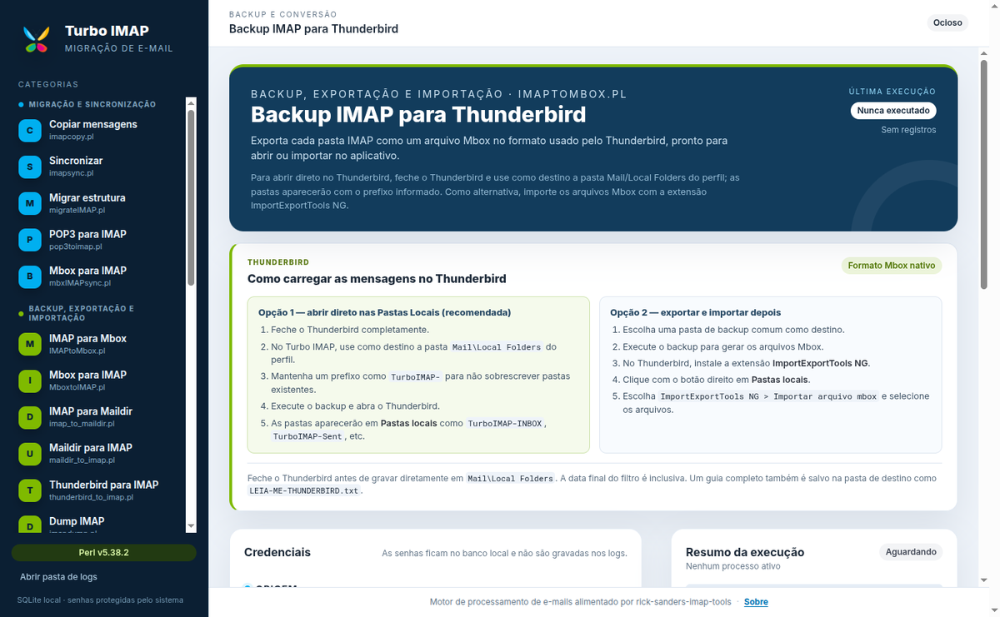
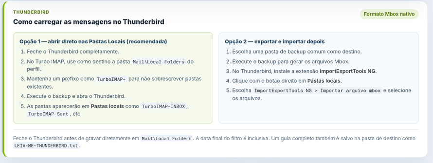
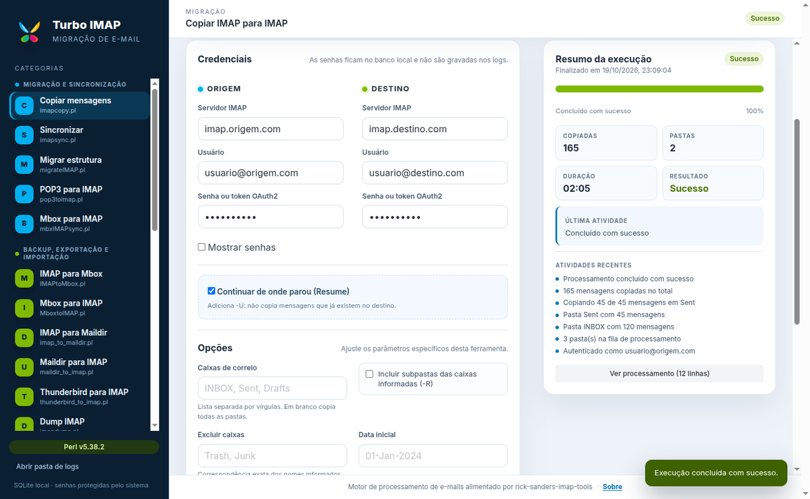

Contas e regras mudam
Limites de armazenamento, contas encerradas e mudanças de política podem bloquear o acesso ao histórico. Um backup local mantém tudo acessível.
Backup local · IMAP + POP3
Faça backup completo, migre e preserve mensagens de Gmail, Outlook/Microsoft 365, Yahoo Mail e qualquer webmail compatível com IMAP ou POP3 — com uma interface gráfica e sem linha de comando.

Compatível com webmails que oferecem IMAP ou POP3
Marcas de terceiros pertencem aos seus respectivos proprietários. O Turbo IMAP não é afiliado nem endossado por esses serviços.
Por que fazer backup
Uma caixa de e-mail guarda anos de trabalho, comprovantes, conversas e contatos. Ter uma cópia local é a forma mais segura de não depender das regras, do armazenamento ou da disponibilidade de um serviço externo.
Limites de armazenamento, contas encerradas e mudanças de política podem bloquear o acesso ao histórico. Um backup local mantém tudo acessível.
Copie caixas completas entre Gmail, Outlook/Microsoft 365, Yahoo Mail e outros provedores, preservando mensagens e estrutura de pastas.
Exporte para Mbox, Maildir ou Thunderbird e abra quando quiser, mesmo sem internet ou sem acesso à conta original.
Recursos
25 ferramentas para backup, migração, limpeza e diagnóstico, com formulários guiados, progresso, logs e histórico local.
Baixe caixas completas ou apenas o período que você precisa.
Copie e sincronize contas sem perder pastas, flags ou mensagens.
Exporte para formatos locais e abra no Thunderbird ou em outro cliente.
Use data inicial e final para backups incrementais e migrações parciais.
Continue de onde parou e evite copiar mensagens que já existem.
Remova duplicatas, esvazie pastas e gerencie a lixeira com segurança.
Tamanhos, pastas, capacidades do servidor, ping e teste de OAuth2.
Resumo amigável, terminal completo e arquivos de log para cada execução.
Credenciais no SQLite local, senhas fora dos logs e IPC isolado.
Como funciona
Você não precisa memorizar parâmetros de Perl. O Turbo IMAP monta os comandos, valida os campos e acompanha cada etapa.
Instale no Windows ou use o pacote do Linux/macOS. No Windows, o Perl já vem incluído.
Diga qual é o servidor de origem e o destino — outra conta IMAP, uma pasta local ou o Thunderbird.
Selecione pastas, datas e opções de retomada. O app valida tudo antes de executar.
Veja o resumo, o progresso e o log. Ao final, o backup está pronto para ser guardado ou aberto no Thunderbird.
Thunderbird
O Thunderbird usa Mbox como formato nativo das Pastas Locais. O Turbo IMAP exporta uma pasta IMAP por arquivo Mbox, preservando o conteúdo das mensagens.
Mail\Local Folders do perfil.
TurboIMAP- para não sobrescrever
pastas existentes.
TurboIMAP-INBOX, TurboIMAP-Sent, etc.
Prefere importar depois? Use a extensão ImportExportTools NG e importe os arquivos Mbox pelas Pastas Locais.

Interface
Formulários guiados, resumo amigável e o terminal completo disponível quando você precisar.

Downloads
Escolha o sistema operacional. Todos os arquivos estão na release oficial do GitHub.
Windows 10/11 · x64
Instalador NSIS. Inclui Strawberry Perl portátil e SQLite nativo.
Baixar para WindowsDistribuições x64 · AppImage
AppImage portátil. Requer perl no PATH.
Macs com processador Intel
Zip do aplicativo. Requer perl no PATH.
Macs com chip M1, M2, M3 ou superior
Zip do aplicativo. Requer perl no PATH.
Observações: no Linux, torne o AppImage executável com
chmod +x. Os pacotes macOS são zips sem assinatura digital; o
Gatekeeper pode solicitar confirmação. O instalador Windows também não é
assinado, então o SmartScreen pode exibir um aviso.
Perguntas frequentes
Sim. O aplicativo funciona com qualquer conta que permita acesso por IMAP ou POP3, incluindo Gmail, Outlook/Microsoft 365, Yahoo Mail, iCloud Mail, Zoho Mail e Fastmail. O provedor pode exigir senha de aplicativo ou autenticação OAuth2.
No Windows, não: o instalador inclui o Strawberry Perl portátil. No Linux e
no macOS, é necessário ter o perl disponível no
PATH.
Não. O processamento acontece no seu computador. As credenciais ficam no
banco SQLite local, protegidas pelo safeStorage do Electron
quando disponível, e não são enviadas para servidores do projeto.
Sim. As ferramentas de cópia e backup aceitam data inicial e data final no
formato DD-MMM-YYYY, permitindo exportar apenas o intervalo
desejado.
Sim. O Turbo IMAP exporta arquivos Mbox no formato nativo das Pastas Locais do Thunderbird. Também é possível importar os arquivos com a extensão ImportExportTools NG.
Sim. O aplicativo é open source e distribuído sob a licença MIT. Os scripts Perl originais mantêm a licença da suíte rick-sanders-imap-tools .
Comece agora
Baixe o Turbo IMAP, informe sua conta e faça uma cópia local das mensagens que importam.